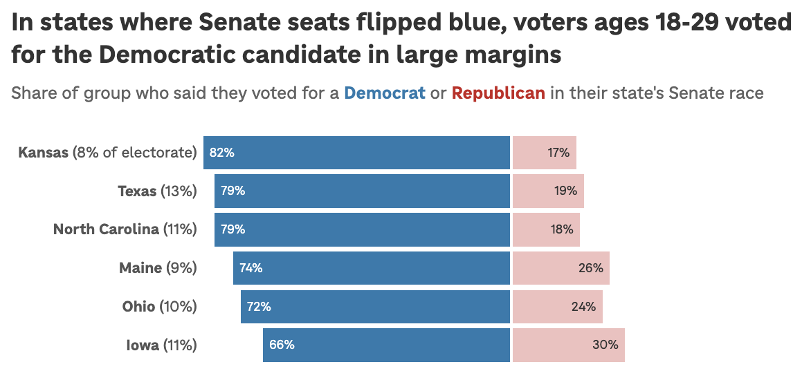

2026 Midterms elections NPR
How Gen Z voters helped fuel a blue wave for Democrats
As I watched race results roll in while working election night, I began compiling data on voting trends in key Senate and House contests. When the National Desk reached out for visuals on young voter results, I was able to not only turn around a chart within hours but also pitch and create another graphic comparing young voters to the state.